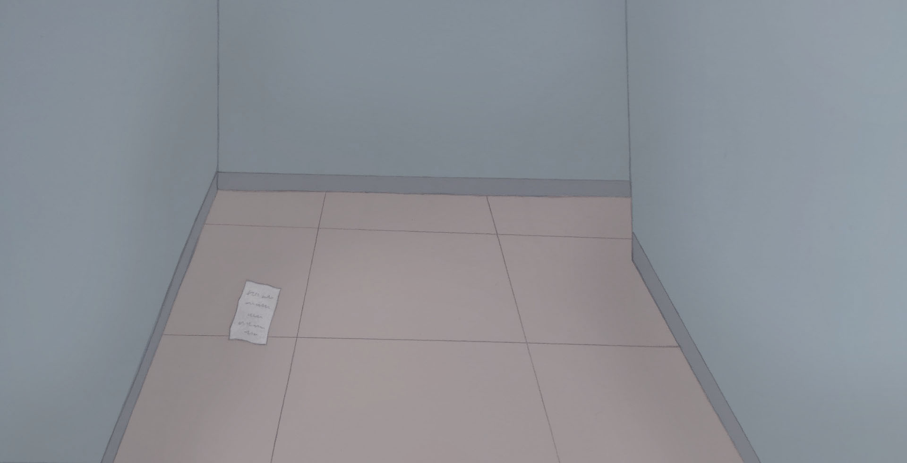
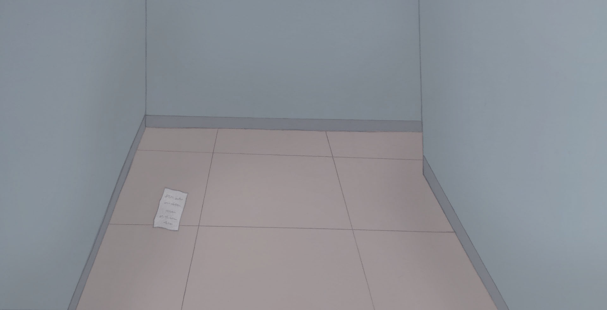
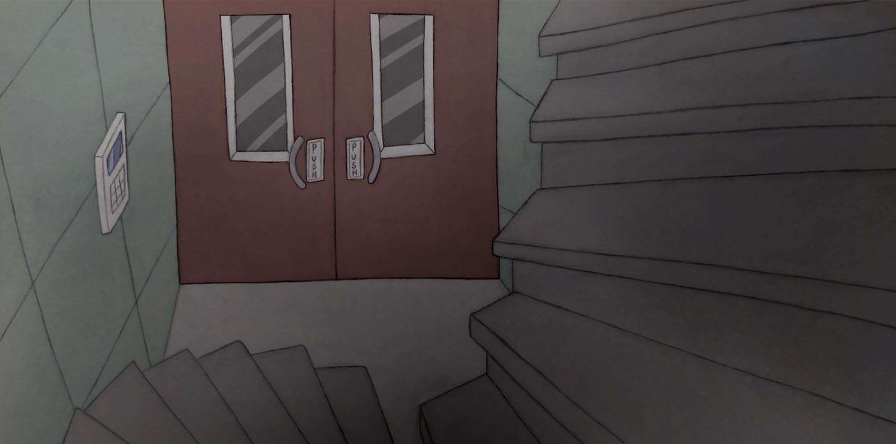
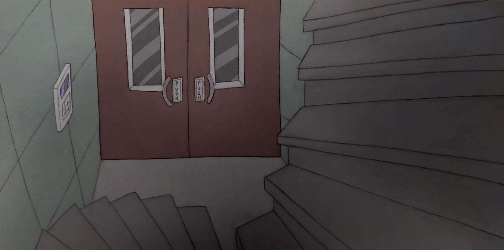

@ghost.with.a.pulse Online Art Portfolio
Backgrounds
Tip: Hover over the images below to find out more about each piece.


 



 



A primary school classroom scene for the game, 'Dearest Demons' — a psychological horror game which is currently being developed by GhostWithAPulse.
A messy bathroom scene made for the game, 'Wilfred's Last Garden' — a sci-fi horror game created by Cory White & GhostWithAPulse.
A beach-themed playroom scene made for the game, 'I Made You a Happy World' — a psychological fantasy game created by Ana Karpova, Tianze Xie & GhostWithAPulse.
A playroom scene with two tunnels in it, one of them locked. This was a scene made for the game, 'I Made You a Happy World' — a psychological fantasy game created by Ana Karpova, Tianze Xie & GhostWithAPulse.
A messy bedroom scene made for the game, 'Wilfred's Last Garden' — a sci-fi horror game created by Cory White & GhostWithAPulse.
The decontamination / spray room scene in the game, 'Wilfred's Last Garden' — a sci-fi horror game created by Cory White & GhostWithAPulse.